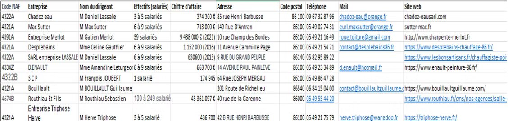
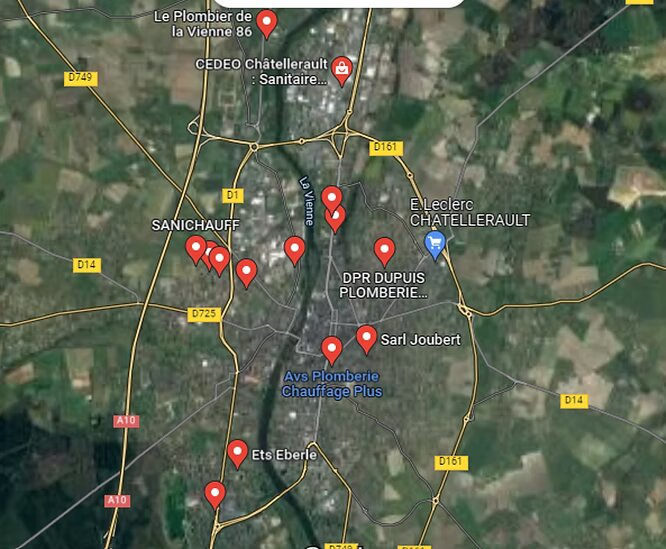
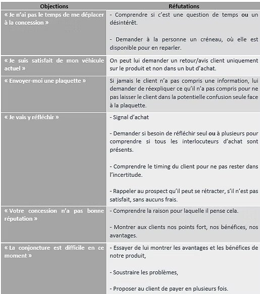
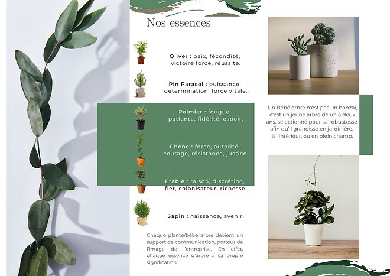
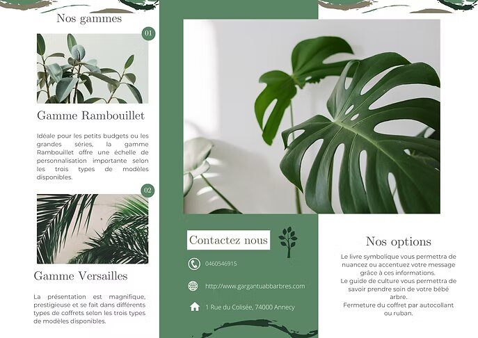
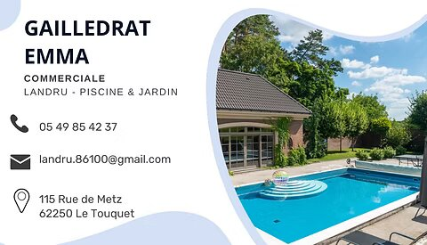
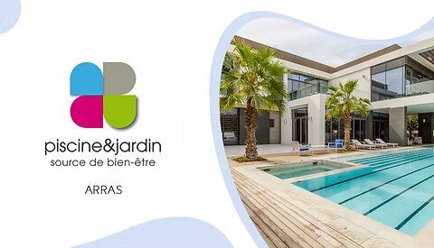

Préparer l'entretien de vente
Au cours du premier semestre, j'ai acquis les compétences nécessaires pour préparer efficacement un entretien de vente. L'objectif était de bien comprendre les produits à vendre, les besoins des clients et de répondre à leurs attentes. Cela impliquait une préparation minutieuse avant chaque rendez-vous client. J'ai appris à élaborer des présentations adaptées à l'entreprise que je représentais, des catalogues mettant en valeur les produits et services à vendre, ainsi que des flyers et des cartes de visite. Pour établir le premier contact, j'ai utilisé différentes techniques telles que le SBAM ou la règle des 4x20. Il était également essentiel que je me renseigne sur mon entreprise afin de pouvoir la présenter de manière optimale lors de l'entretien avec mes clients. Ensuite, lors de la phase de découverte, j'ai préparé des questions spécifiques pour mieux comprendre les besoins et attentes de mes clients.
Nous avons eu la chance d'assister à un Master de Négociation au sein de l'IUT de Châtellerault qui a été organisé par les 2ème années du BUT Techniques de Commercialisation dans le cadre de leur projet transverses. Cela aura été pour moi bénéfique d'y assister. D’une part, cela m’a permis de voir à quoi ressemblait une vraie négociation complète par des personnes expérimentés et le niveau que nous pouvons atteindre en début d’année prochaine. En effet, le master de négociation étant le 23 novembre et venant de commencer dans la matière, nous avons commencé à apprendre les techniques de la vente tel que le SBAM, et nous avons donc pu nous inspirer de ce que nous avons vu lors de plusieurs négociations afin de nous améliorer personnellement. D’une autre, ce sujet m’intriguait puisque je m’intéresse à la technologie. J’ai également pu discuter avec certains professionnels participants en tant que client aux négociations et d’en apprendre plus sur le monde de l’entreprenariat. Durant les deux SAE que j'ai du faire réaliser accompagné d'un camarade de classe, nous avions pour objectif de signer une vente à la fin de notre rendez-vous. Pour la première SAE, nous avons réalisé un travail en amont afin d'établir une prospection de potentiel client dans une zone de chalandise précise. Je me suis donc chargé d'établir précisément cette zone à l'aide de GoogleMap pour nous aider par la suite dans nos recherches. Une fois la recherche de prospect faite, j'ai regroupé tous ces prospects sur cette même zone de chalandise afin d'avoir un rendu global. Afin de regrouper tout nos prospects, nous les avons répertoriés sur un tableau Excel avec différentes informations essentiel à récolter : le code NAAF, le nom de l'entreprise ainsi que de son dirigeant, l'effectif et le chiffre d'affaire de l'entreprise, son adresse et son code postal, son numéro de téléphone, son adresse mail ainsi que son site web. Voici donc ce rendu :
 
J'ai également eu à élaborer un script téléphonique pour contacter les prospects. À cette fin, j'ai anticipé plusieurs éventuels obstacles lors de ces appels, afin de les éviter ou de savoir comment les gérer. Voici quelques exemples d'objections :

Au cours du second semestre de ma première année, j'ai eu l'opportunitée de travailler sur plusieurs cas pratiques différents : FlyDrone, Piscine et Jardin, et Gargantua. Cette expérience m'a permis de m'exercer et de gagner en assurance lors des rendez-vous avec les clients. J'ai également pu mettre en pratique diverses techniques de vente telles que le SBAM et la méthode du 4x20, ainsi que de me familiariser avec le déroulement optimal des différentes étapes d'une vente, notamment l'argumentation et la présentation des produits. Une de mes initiatives a été d'apporter des échantillons de produits lors des ventes. Par exemple, avec Gargantua, j'ai apportée des plantes similaires aux produits que nous vendions afin de fournir un exemple concret au client, lui permettant de voir et de toucher les produits. Pour préparer efficacement les rendez-vous, j'ai créée différents supports visuels tels que des flyers, des cartes de visite, des catalogues et des diaporamas pour accompagner mes explications. Voici quelques exemples d'OAV :
   